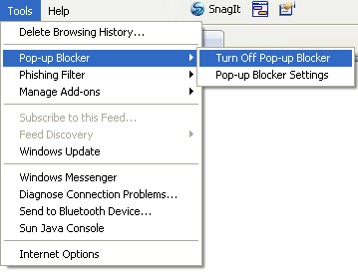
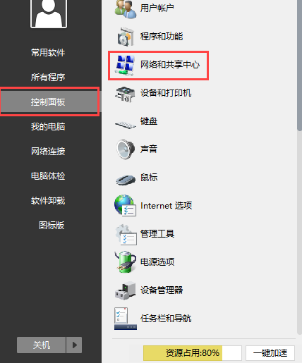
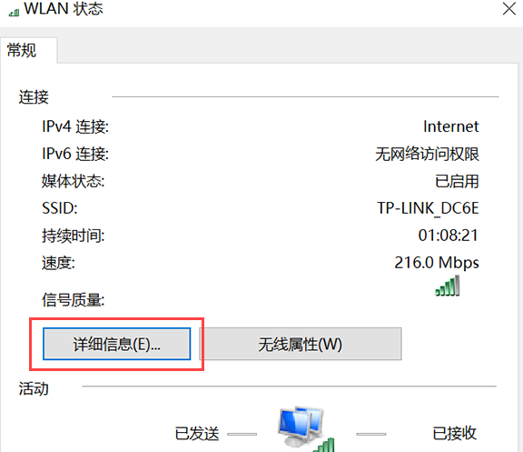
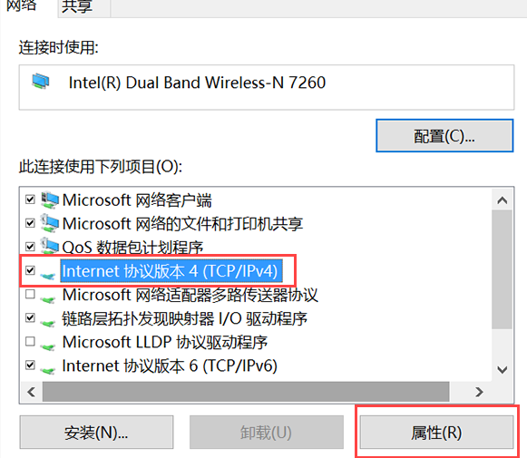
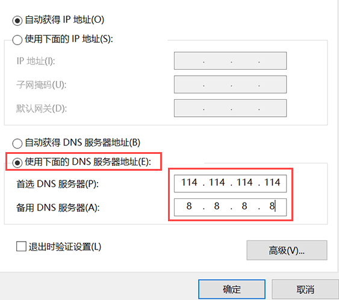
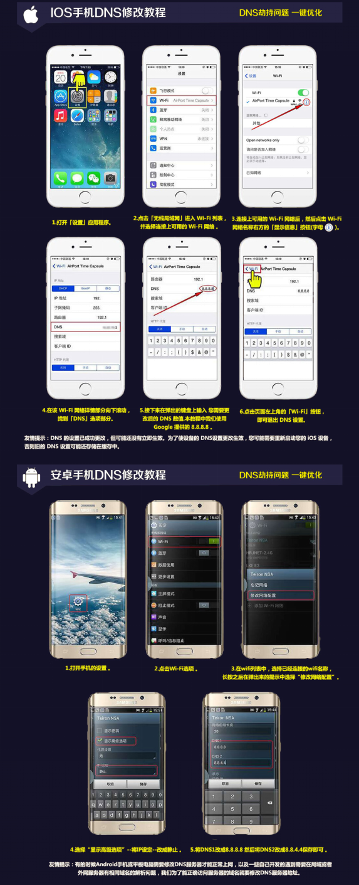

存款问题
电脑（PC）端
手机APP2.0
存款限额是多少？
支付宝微信限额：50元-2999元极速网银快捷限额：50元-49999元
公司入款限额：100元—50000元
到账时间是多久？
极速网银快捷、微信、支付宝：完成支付后一般都是即时到账，如果出现延迟到账，请联系在线客服。银行转账：相关部门会在确认到款项后的5分钟内办理到账。
延迟到账怎么办？
款项出现延迟到账的几种情况：- 银行系统维护或者系统延迟，导致款项延迟。一般出现在银行转账中，玩家可以耐心等待，等待款项到账后，再提交证明即可。
- 使用微信存款或者极速存款，由于系统延迟，导致款项延迟超过30分钟。玩家可以联系在线客服咨询详细情况，在线客服会协助您查询存款回单。
微信支付超过商户限额怎么办？
部分会员在使用微信支付过程中，可能会看到以下提示:“超过当日在该商户的微信扫码支付限额，请尝试通过其他方式完成支付”，超过商户限额有两种可能，一种是商户限额，一种是您微信绑定的银行卡限额。一般情况下商户限额您先尝试小额入款如成功支付后再尝试大额，如果您多次支付还是这样的提示，那么就是说明您的微信超过了限额。请您进入微信，点击“我”然后查看“钱包”，点击您绑定的银行卡就可以查看到定的银行卡限额哦~如果您想修改限额，可以咨询下方“交易限额咨询：95017”客服热线进行提升哦~存款窗口无法弹出如何处理？
在IE浏览器的“工具”菜单上，指向“弹出窗口阻止程序”，然后单击“启用弹出窗口阻止程序”。
存款使用卡号、密码等，但总是不能成功，为什么？
您好，可能是因为您没有申请开通网上银行，您可以登入银行网页，点击“网上个人自助注册”进行操作；也可直接前往柜台办理。如有疑问，您可以致电阁下银行卡上注明的银行全国统一客服电话询问。常见问题
延迟到账怎么办？
款项出现延迟到账的几种情况：- 银行系统维护或者系统延迟，导致款项延迟。一般出现在银行转账中，玩家可以耐心等待，等待款项到账后，再提交证明即可。
- 使用微信存款或者极速存款，由于系统延迟，导致款项延迟超过30分钟。玩家可以联系在线客服咨询详细情况，在线客服会协助您查询存款回单。
首存优惠如何申请？
首存优惠38%和首存优惠50%需要存款后转入到指定的游戏钱包，然后点击“账户中心”，选择“我的优惠”，点击申请参与即可，稍等待5—10分钟会自动进行审核处理（期间不得进行投注，否则无法享受该优惠）。其他优惠如何申请？
需要根据网站提示进行申请，如续存50%可以联系在线客服进行申请，打火机优惠需要发送邮件进行申请。返水比例是如何计算的？
返水比例需要根据当天投注额进行决定的，投注额越多返水比例越高。VIP成长需要如何升级，享有哪些福利呢？
VIP达到相应的金额和投注要求，会在月底三天自动升级，VIP会员可以享受升级礼金，每月免费红包及生日礼金。为何有多个不同钱包帐户？
我们设有两种钱包类型——主账户 / 产品钱包- 主账户是迪士尼国际上娱乐城所有产品的现金钱包，存款和提款操作必须在中心钱包进行。您可以将中心钱包的有效资金进行提款或者转账到其他产品钱包。
- 产品钱包中的有效资金可以直接进行投注, 也可以转账到主账户或者其他产品钱包。
**游戏钱包对应的游戏平台。
转账页面无法跳转怎么办？
- 您的浏览器设置阻止了弹跳窗口
“请问是否允许弹跳窗口？”相关提示说明，点击允许。最方便快捷的方法，就是建议您更换其他的浏览器或者其他的链接进行尝试。建议您使用IE、谷歌、或者火狐浏览器进行操作哦~如果您没有其他可使用的浏览器，您也可以尝试清除您的浏览器缓存，再次尝试即可。
- 您的网速原因造成系统反应缓慢
如果您打开所有网页比较缓慢，这种情况就应该是您的网络问题了，您可以切换到其他网络设备再次尝试哦~
- 支付平台问题
“正在升级维护”当支付平台不稳定或者相关维护时，页面也是无法进行跳转的，这种情况下会员都将暂时无法进行该支付平台的相关操作，您可以尝试使用其它支付方式，或者稍后再次尝试哦~
如何查询迪士尼国际最新的优惠活动？
点击导航栏的{优惠活动}。选择下方优惠分类：{全部优惠}，{存送}，{返水}，{签到}，{节日}，{VIP成长活动}，{欧洲杯}。
官网页面会显示最新的优惠活动，选择您喜欢的立即参加吧！
我无法看到这个网站上的部分图片，怎么办？
旧版本的Adobe Flash Player在显示部分Flash图片时存在问题。我们建议您安装使用Adobe Flash 9.0或更高的版本。进行游戏对系统配置有要求么？
您好，我们设计的网页将会提供新一代浏览器服务，提供更好的特点，让您能够享有更好的投注乐趣。我们希望您能使用Internet Explorer 6.0或者是以上的浏览器版本。电脑手机备用网址有哪些？
电脑：手机：
推介代码是什么意思？
若有推荐人代码，则可填写代码。迪士尼国际公司的实力和信誉如何？
点击下方关于我们进行查看。如何查看体育直播？
在主页体育赛事，最后方有直播live，可以进行体育直播。修改个人信息如何进行修改？
目前网站上个人信息无法自行修改，需要联系在线客服进行修改。我不想要这个账号了，怎样注销账号？
迪士尼国际不以任何理由注销会员账户，您可以与在线客服联系申请冻结/停用您的会员账户如何成为代理？
如果您想成为我们的合作伙伴可以点击页面下方代理合作进行注册，我们代理专员会主动与您取得联系。也可以点击联系我们查询到合营部的联系方式，取得联系。提款问题
- 如何进行提款？
- 登陆帐号后点击右上角的“取款”。
- 进入页面后会有流水检测功能，会有提示打码量，完成打码量后输入下方取款金额，取款密码，如果未添加银行卡信息需要绑定银行卡，选择银行名称，输入开户姓名、开户账号、开户行，点击下方取款即可。
- 提款绑定的银行卡姓名需与游戏账户的注册姓名一致。
- 存款需满足有效投注额要求后方可申请提款。
- 若您未申请任何红利优惠，满足1倍投注即可申请提款。
- 若申请首存红利，则需要满足优惠活动写明的有效投注额要求。
- 全天24小时都可进行提款申请。
支持提款银行有哪些？
我们网站支持的提款银行有：中国银行、中国工商银行、中国建设银行、中国农业银行、中国招商银行、中国交通银行、中国光大银行、中国邮政储蓄银行、平安银行、中国民生银行、浦发银行、广发银行、中国中信银行、华夏银行、兴业银行、上海银行、上海农商银行、北京银行。如何进行提款？
提款单笔限额和次数是多少？
提款金额单笔最低100元最高5万，每天最多可提款5次，每日最高款25万。提款时间是多久？
一般取款时间是5-10分钟即可到账，如果长时间未到账请联系在线客服进行查询。提款注意事项有哪些？
提款的条件是什么？
如果未申请优惠需要完成本金1倍有效投注即可提款，如果申请优惠需要完成优惠相应的有效投注即可提款，可以在网站页面或联系客服查询剩余流水额。如果我的提款交易失败，我该怎么办?
您可以询问客服，查询提款失败的原因。可以绑定多张提款银行卡嘛？
是可以绑定多张提款银行卡的，在账户中心选择取款银行卡，点击新增进行添加。账号问题
如何进行账号注册？
- 点击网站右上角“免费开户”的功能按键。
- 进入注册页面填写开户申请表，填写所有带*号的项目即可完成注册。
- 如果注册信息栏显示红色，代表该信息不符合要求，请根据提示重新填写。
注册须知
- 为了规范网站游戏账户管理，每一位会员只允许注册一个游戏账户，请您填写真实的姓名，提款需绑定和注册姓名一致的银行卡。
- 同一用户名，邮箱以及电话只能注册一个游戏账户，如果该信息已被使用，将无法再次被用于注册新账户。
- 注册密码：为了保障您的账户安全，密码不可与用户名相同。
忘记密码
点击右上角“忘记密码”输入您需要找回登录密码的用户名和预留邮箱获取密码。**如果您的邮箱未收到邮件，请咨询在线客服人员。
如何更改密码
- 请您登录游戏账户后，点击右上方的“账户中心”。
- 点击页面的“个人资料”，在“修改账户密码”区域内填写新旧密码。
- 点击“提交”即可完成修改。
游戏账户分为哪几种？
迪士尼国际Ebet、迪士尼国际、BBIN、GD真人、欧博真人、OPUS快乐彩、AG、沙龙真人、双赢彩票、newPT、KG彩票、MG、申博真人、NT电游账号登入一直提示被锁定是什么原因？
是由于您的密码输入错入五次，为了保障您的账号安全，系统自动为您锁定了账号，建议您可以联系在线客服进行询问解除锁定。网站允许一张银行卡绑定多次吗？
网站只允许一张银行卡绑定一个会员账号，不可以多次绑定。APP问题
如何处理手机APP闪退问题：
【简介】闪退，多指在移动设备（如iOS、Android设备）中，在打开应用程序时出现的突然退出中断的情况（类似于Windows的应用程序崩溃）。多表现为：应用程序画面一闪而过，随即退回到桌面。手机APP出现闪退，可能有以下原因：
- 应用程序自身漏洞：开发的应用程序代码存在缺陷，造成大多数设备在运行该程序时会出现闪退的情况。这种情况需要开发者进行解决。
设备问题： 主要包括系统固件版本不支持、系统配置（CPU、RAM等）不支持。这种情况表现为部分设备能正常运作该程序，而其他设备会闪退。
APP闪退怎么处理？
- 【缓存垃圾过多】平时在使用软件的过程中，会产生一些垃圾文件，如果长时间不清理会导致手机越来越卡，也会出现闪退状况。进入设置–应用程序-全部-找到有问题的应用程序，清除数据或者缓存。（注：清除数据，会清除掉应用的个人设置、账户信息等。)
- 【运行程序过多】如果不进行设置，很多软件都会自己运行，而手机后台程序过多会造成内存不足，从而造成应用闪退。如出现软件闪退，可先清理内存后再试试。
- 【手机杀毒软件】部分手机软件存在着恶意代码，会被杀毒软件拦截因而不能正常进入，应该通过绿色下载平台或者使用软件商店来下载安全系数较高的游戏。（注：以上三个原因现在都可以通过安全软件清理，轻松解决。但需要注意在删除一些大型文件时请谨慎。)
- 【应用版本问题】如果应用的版本较低，会导致应用软件不兼容，造成闪退。如果是版本太旧，更新为新版本即可。如新版本如果出现闪退，是应用改版本还在调试中，无需担心，会很快修复。
- 【网速问题】部分软件需要一个稳定的网络，使用的是3G/4G网络，造成闪退的可能性比较大，建议在连接WiFi的情况下使用。
- 【缺少数据包】一些APP是需要数据包才能运行。所以要先安装好数据包才能使用。
- 【系统不兼容】部分软件对版本有一定的要求，如果系统版本过低，软件是不能支持的，所以会闪退。
- 【分辨率不兼容】一些软件对手机分辨率有一定的要求，如果手机分辨率不兼容，有部分软件就容易出现闪退或提示其它错误。
安卓手机闪退如何解决？
- 闪退一般是运行内存【RAM】不够导致的。
- 您可以到电脑管家官网下载一个电脑管家。
- 然后将手机通过数据线连接到电脑上，对手机进行深层优化。
- 打开【电脑管家】——【软件管理】——【手机管家】——安全体检，清理缓存、卸载残留、后台程序和自启项后，释放您的运行内存，然后再使用手机APP就不会闪退了。
苹果手机闪退如何解决？
- App兼容性问题
这种情况一般发生在旧的App和新的系统之间。举个例子：比如您现在已经升级到ios10.1了，当您安装了一个很久没更新过的还没兼容iOS10的App，那么很有可能就会出现闪退了。解决办法就是等待该App更新后再安装。
- 后台程序多内存不足
不得不说iOS的优化做的非常好，流畅度也比安卓好很多。当您打开很多程序的时候。这时后台程序太多内存出现不足时就会出现闪退现象。解决办法：双击主屏幕按键调出后台关掉所有App然后再看看会不会闪退。
- 越狱修改字体
部分越狱用户可能会出现App闪退现象。特别是美化换过字体的，一般你所换的字体字库不全的话碰到没有的字体就会出现闪退。解决办法：换回原厂字体或者不越狱一般能解决。
- 在第三方工具安装的App
很多朋友都喜欢用第三方工具安装App。虽然在这些手机助手上下载的软件游戏免费速度还很快，但毕竟不是正版App很容易就出现闪退或者弹出登录框的情况。解决办法：把iPhone连接上电脑，使用各种手机助手自带的闪退修复功能修复。
优惠问题
首存优惠如何申请？
登陆首页后点击右上角账户中心，选择我的优惠，在我的优惠页面申请即可。其他优惠如何申请？
通常方式通常都会在活动规则里体现，请您根据优惠活动指定的方式进行申请。返水派发的比例是多少？
返水分为：体育反水、娱乐厅返水、小游戏返水，各产品返水比例如下：| 体育有效投注额 | ≥100以上 | ≥200000 | ≥1000000 | |
| 天天返水 | 0.4% | 0.6% | 0.8% | |
| 娱乐厅有效投注额 | ≥100以上 | ≥800000 | ≥2000000 | ≥5000000 |
| 返水 | 0.4% | 0.6% | 0.8% | 1.2% |
| 小游戏效投注额 | ≥100以上 | ≥1500000 | ≥2800000 | ≥5600000 |
| 返水 | 0.6% | 0.8% | 1.0% | 1.2% |
返水何时派发？
返水最迟次日下午(北京时间18:00 pm)前系统自动派发、无需申请，只需一倍流水即可提款（不限游戏平台）。优惠申请成功后一直没有收到红利或礼品怎么办？
如果您的优惠申请成功后没有在指定时间收到礼品，请您可以联系客服或发送邮件 进行询问。一般条款与规则
- • 凡申请此优惠活动的会员需由优惠审核部门验证核实身份。(如有极少数个别需要，迪士尼国际 保留要求会员提交相关个人证件信息进行核实的最终权利)。
- • 优惠促销只适用於拥有一个独立账户之玩家。每户、每一住址、每一电子邮箱地址、每一电话号码、相同支付方式（相同借记卡/信用卡/银行账户号码）及IP地址只能开户一次。(会员的手机号码+IP地址+银行卡开户行，三者归属地必须统一，否则无法申请此优惠)
- • 若会员参加一个或以上的优惠活动，而客户已申请并得到其中一个活动红利【不论是条款中所说明的获得红利后的投注额/累计投注额后所能获得的红利/存款额等】，均不会把该次所获得的红利或累计红利的要求，重复计入另一优惠活动的红利要求条件中。
- • 任何走盘、取消的赛事、对押等(包括串关和单双)及赔率低于欧洲盘1.70，香港盘0.70，马来盘0.70，印尼盘-1.20，美国盘-120的投注将不计算在有效流水内。
- • 所有拒绝投注、无效投注、打平、任何出现对赌情况的投注（例：於百家乐同时下注庄家及闲家）及任何轮盘之投注将不会计算在累积投注要求内。彩票游戏中（例：於时时彩内同时下注大/小、单/双、质/合或全包等）若所得之红利奖金由投注于上述游戏所得，我们保留不给於客户提取高于所存款项的数额之权利。
- • 如果相关帐户被怀疑滥用和/或不符合取得此项优惠的资格， 迪士尼国际 保留所有权利在任何时候都可以停止、取消优惠或索回已支付的全部优惠。
- • 迪士尼国际 有权查核会员的一切投注记录，若会员违反活动已定下的条例及细则之规定或出现任何有非娱乐目的利用红利获利的情况，迪士尼国际 将会撤销所有获奖的权利。
- • 迪士尼国际 保留可单方面执行的决定权，在任何时候无事先通知的情况下，修改、改变、停止、取消以及/或使此推广失效。
- • 参与此活动的会员必须接受及遵循上述规则与条款以及迪士尼国际 所使用的一切网站相关规则与条款。
技术支持
网站无法打开
网站无法打开或者打开缓慢一般是由于以下原因引起：- 当地网络不稳定，建议可以更换其他网络尝试。
- 网络数据传输缓慢，可以联系在线客服咨询备用网址。
- 浏览器垃圾过多，建议删除浏览器缓存。
- 浏览器不兼容。
比较兼容的浏览器
由于某些浏览器的设置与网站冲突，可能无法正常显示网站。目前我们推荐您使用的浏览器有：- 谷歌浏览器
- IE 浏览器
- 火狐浏览器
如何清除浏览器记录
如何设置浏览器弹出窗口
DNS被劫持处理方法
- 打开“开始菜单”找到“控制面板”，点击“网络和共享中心” 
- 在当前页面找到“本地连接”双击打开
- 打开本地连接后点击属性栏 
- 在属性页面找到“协议版本4”并点击属性 
- 在协议版本4属性页面选择输入以下地址，首选DNS服务器：114.114.114.114；备用 DNS 服务器：8.8.8.8 点击确认 
- 手机DNS修改教程 